| 日付 | 2026年8月1日（土） |
|---|---|
| 山域 | 南アルプス |
| メンバー | 単独 |
| 山行形態 | 日帰り |
| アクセス | 車 |
| ルート (Map) | 矢立石登山口 (6:30) - (7:32) 林道終点 - (8:22) 鞍掛沢出合 - (9:35) 乗越沢出合 - (10:59) 鞍部 (11:11) - (11:27) 鞍掛山 - (11:32) 鞍掛山展望台 (11:41) - (13:17) 日向山 - (14:08) 矢立石登山口 |
3度目の沢登り。美渓と名高い鞍掛沢～乗越沢に行ってみることにする。
これまで行った沢よりも規模の大きな沢だ。
本日は早朝に自宅を出発。朝早い時間に日向山駐車場に到着する。標高1120m。
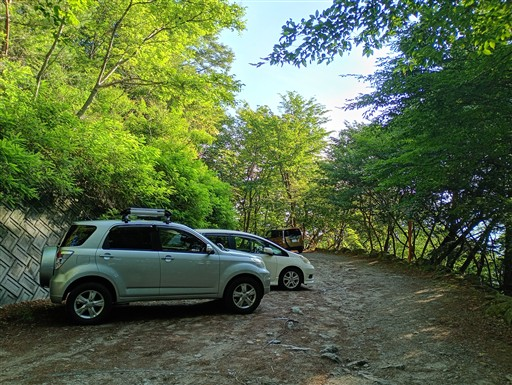
ここは日向山の登山口。帰りはここから下りてくる予定。
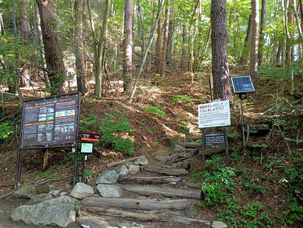
本日はゲートを越えてそのまま林道を先に進む。
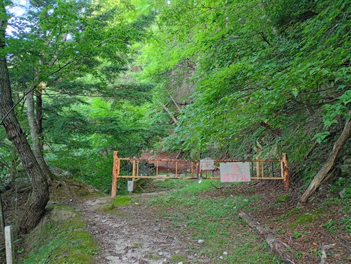
林道は岩が散乱していてかなり荒れている。上を見るとこんな感じ。
いつ岩が落ちてきてもおかしくない。
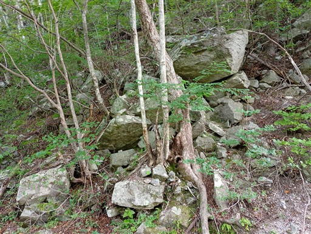
完全に崩壊している場所もある。しかし踏み跡は明瞭でロープもある。
かなり人気の沢なので、人の少ない登山道よりも歩く人は多そうだ。
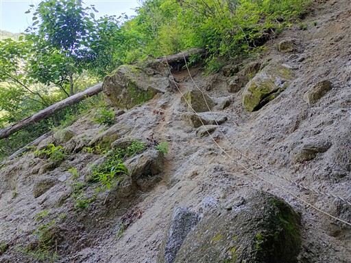
横向きに生える木。木は生きている。
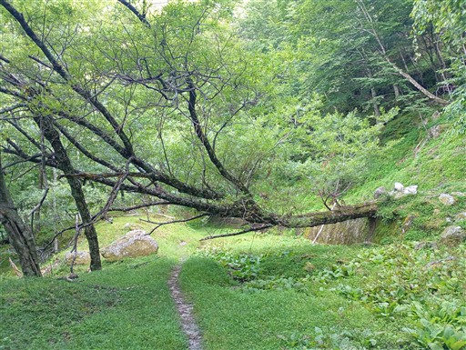
東屋がある。
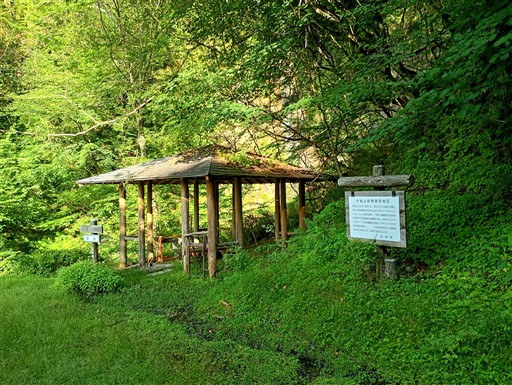
東屋から望む錦滝。
以前、日向山に登ったときは、日向山からここまで
下ってきたが、その道は廃道になっている。
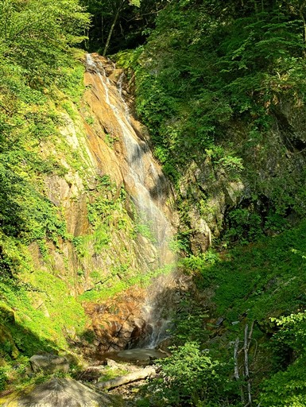
林道は大きく崩壊している。
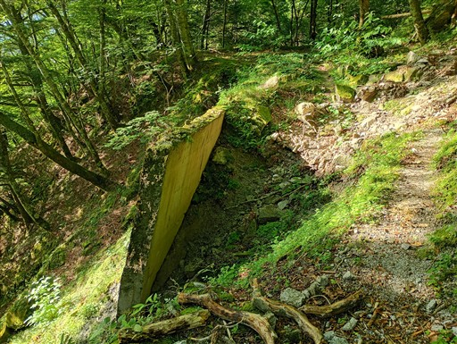
不動滝との分岐点。以前は不動滝方面に行ったが、本日はそのまま林道を直進。
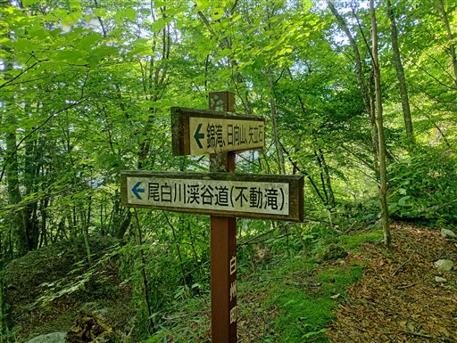
トンネルが現れる。
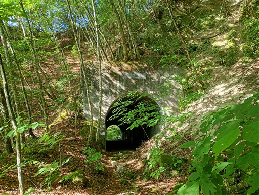
2個目のトンネルはディストピア感がある。
全部で3個のトンネルを抜ける。
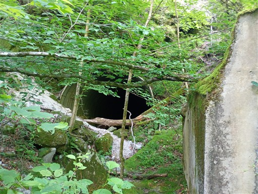
林道終点に到着。
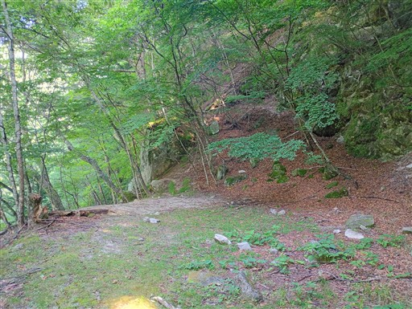
ここから沢まで急斜面を下る。ここで先行者に追いつく。
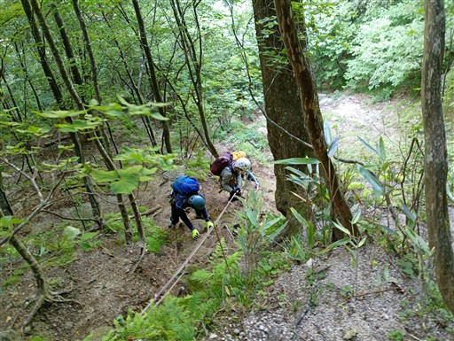
道端に咲くイワタバコ。沢登りを始めたら、この花によく出会う。
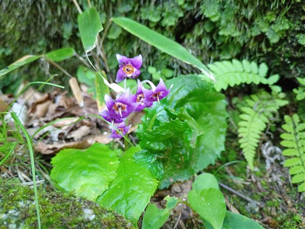
河原に下りてくる。以前、尾白川渓谷を歩いたことがあるが、ここはその上流にあたる場所だ。
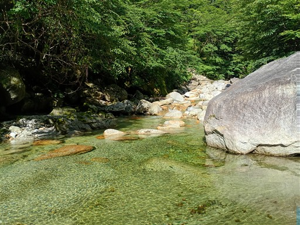
スマホの防水ケースを買ったため、試しに水中写真を撮ってみる。
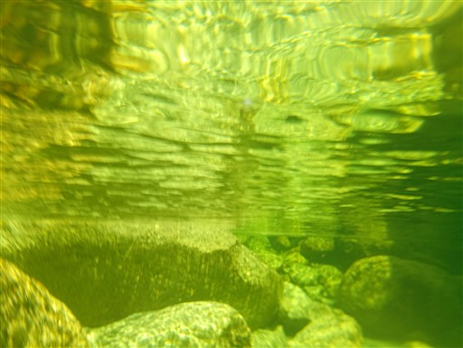
遡行開始。さっそく巨大な釜が現れる。左から超える。
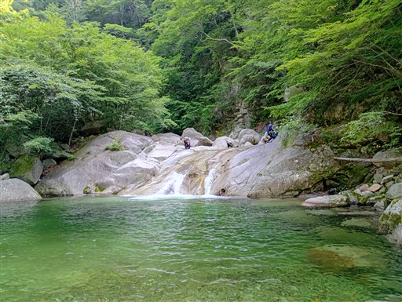
こんな河原を歩いていく。
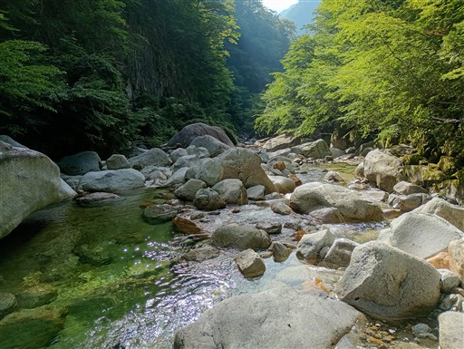
再び滝。左から容易に超えられそうだが、若干岩がぬめっていて怖い。
もしツルっといくと下まで落ちるためかなり慎重に登る。
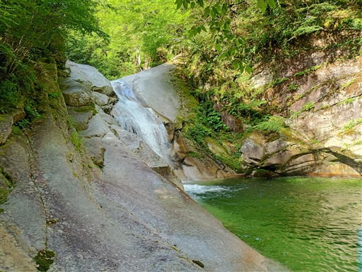
登ったルートを見下ろす。
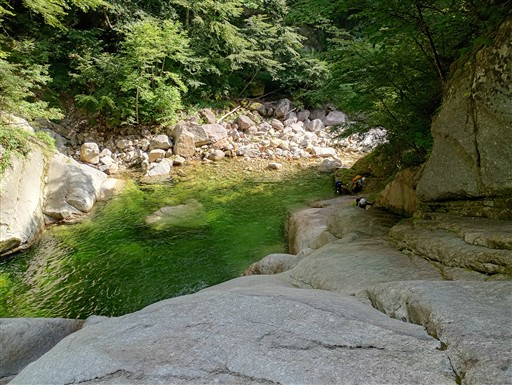
細い岩溝を流れる水。
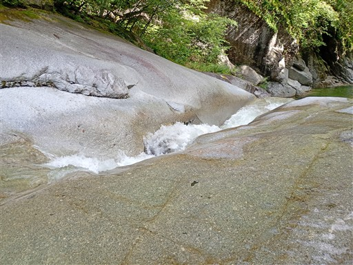
ナメ滝と釜。
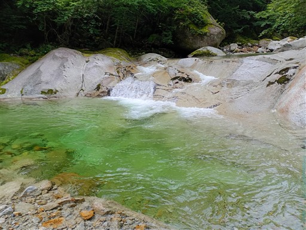
尾白川の支流の鞍掛沢に入って行く。水量は一気に減る。
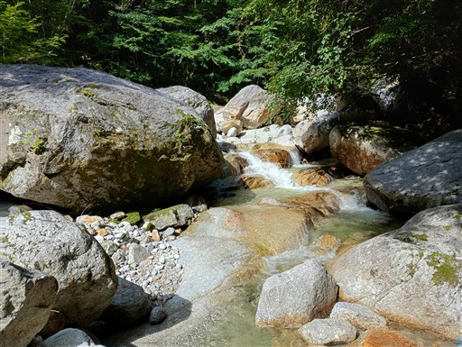
頭上は青空。
水の中に入っていると体が冷されるので暑くはない。
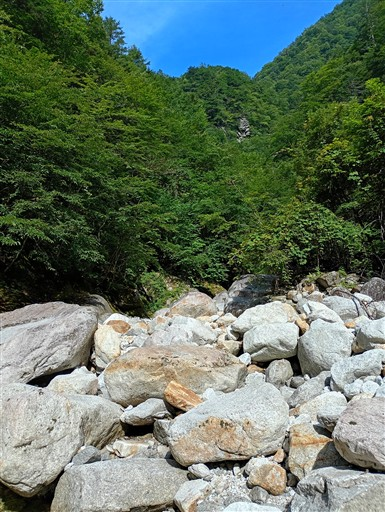
支沢に入っても水の色の美しさは変わらない。
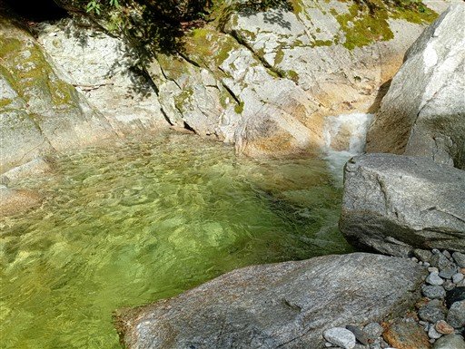
この辺りはとても穏やか。
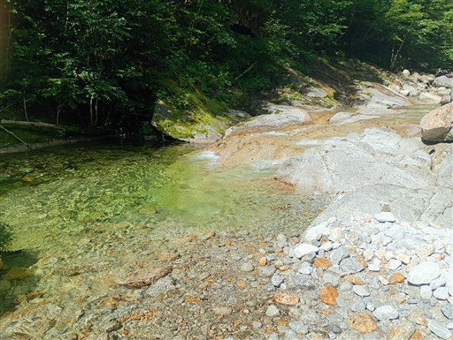
歩きやすい。
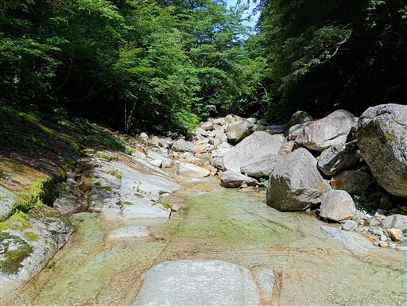
まるで人工の滝のような形の滝。
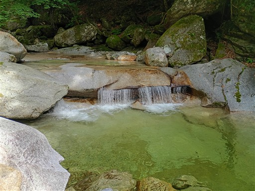
水の色はずっと美しい。
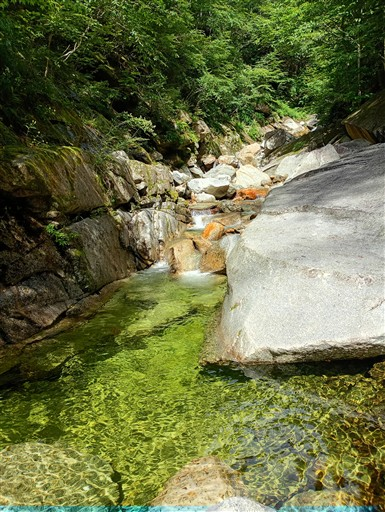
小さな滝。右から容易に超えられる。
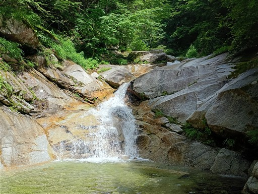
滝を上から見下ろす。
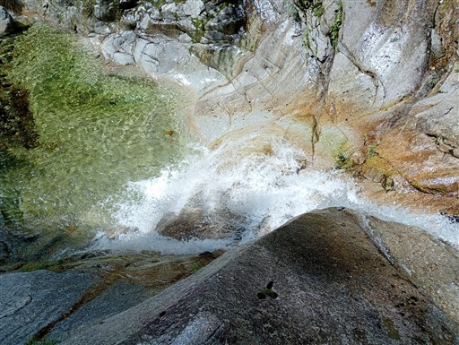
ナメ滝と大きな釜。
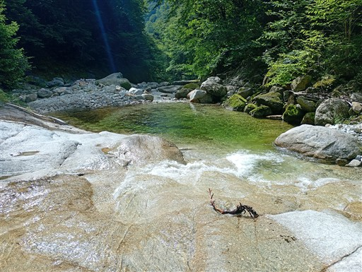
河原が大きく広がる。
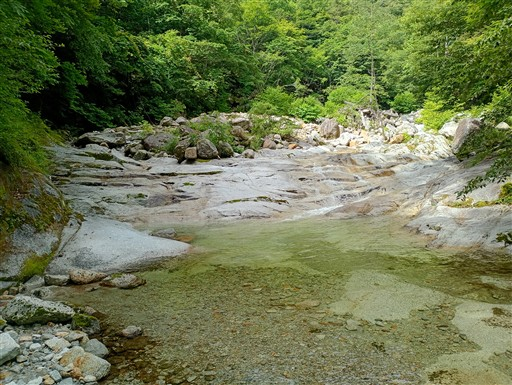
タカネビランジの花が咲いている。
南アルプスに咲く花だが、こんな沢沿いで出会えるとは思わなかった。
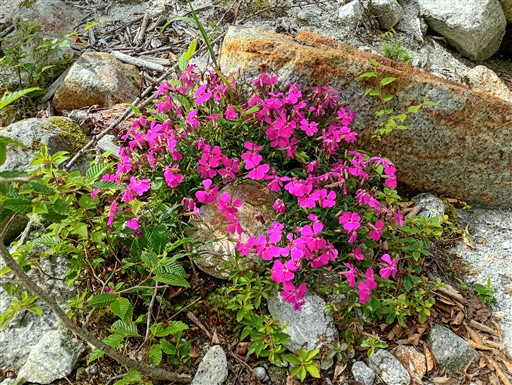
この辺りも歩いていてとても楽しい。
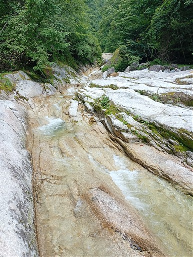
この滝はちょっと難しい。岩が全面ぬめっている。
持ってきたタワシでこすりながら進むと越えられた。
タワシは今後、沢登りの必須アイテムになりそうだ。
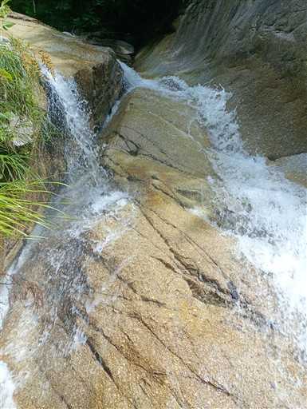
再び穏やかな景色。
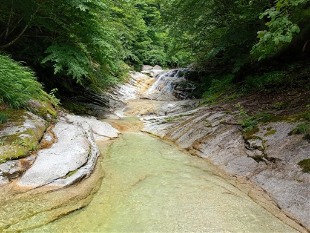
美しい滝。左の岩が乾いているので容易に超えられる。
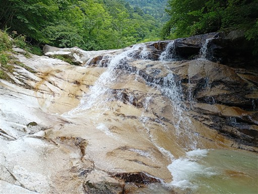
歩いてきた沢を振り返る。
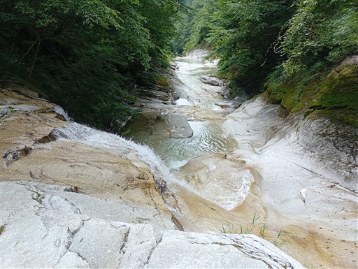
河原の真ん中に小さな森がある。ここは水没しないのだろうか？
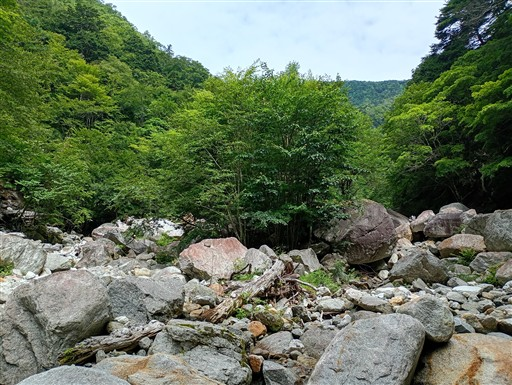
断層のように切れ落ちた滝。右から巻く。
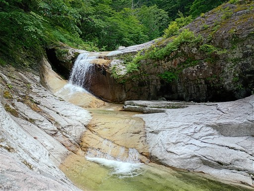
乗越沢との分岐に到着。乗越沢はいきなり滝から始まる。
下はタワシで突破し、あとは左から巻く。
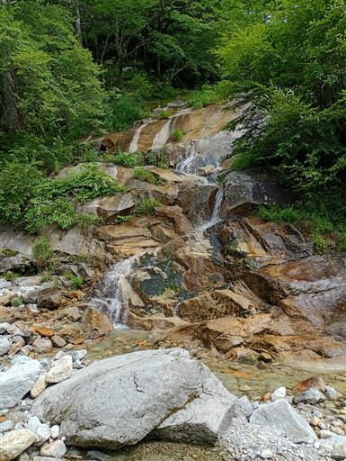
この沢は水量がだいぶ少ない。もう鞍掛沢のようなう美しい景色は見られない。
周回ルートを歩くために通る沢という感じだ。
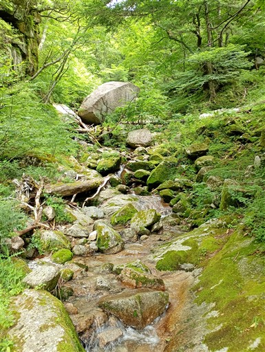
巨大なナメ滝。全面ぬめっていて直登はできない。
面倒なのでタワシも出さなかった。
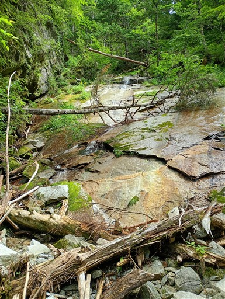
滝を避けて岩の基部を登っていく。
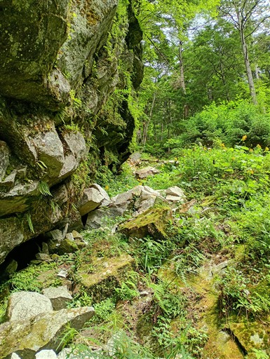
オタカラコウの黄色い花が群生している。
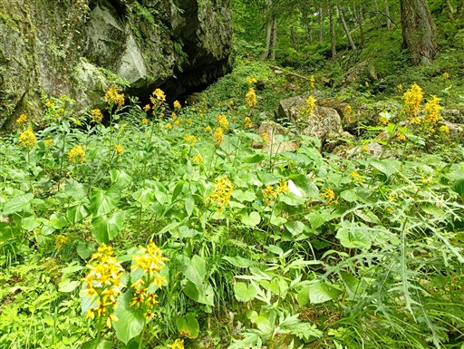
再びナメ滝。この沢は小さい割に難しい滝が多い。
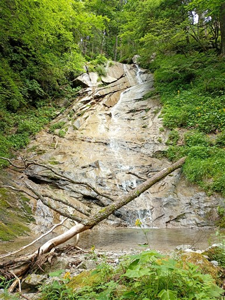
右から巻く。草ぼうぼうに見えるが踏み跡は明瞭。
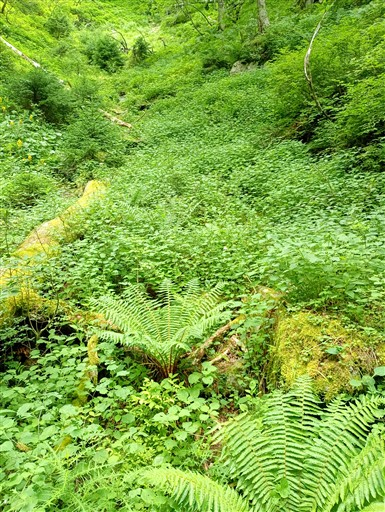
あとはそんなに困難な場所はない。水量も非常に細くなる。
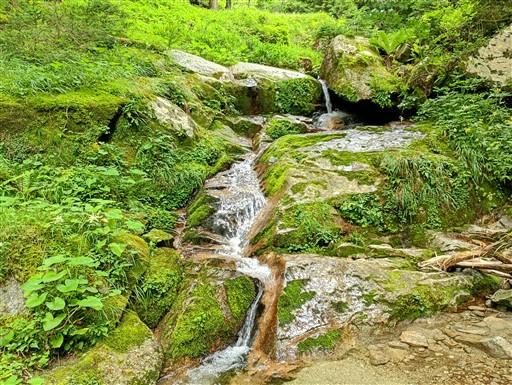
アザミやモミの幼木が多く、チクチクして痛い。
狭い岩溝を登る。登ったあと、左を見るとより大きな沢が見える。
入る沢を間違えたようだ。このまま登ったら鞍掛山に直接行けそうだが、
あまり他の人が歩かないルートなので分岐点まで引き返す。
分岐点。左が正解。
どう見ても左の沢の方が大きいのに、なぜ間違えてしまったのか…
もうほとんど水は流れていない。
タマガワホトトギス。
水流がほぼなくなる。左の斜面が歩きやすそうなので左の斜面に登る。
明瞭な踏み跡を発見。
斜面が急なので決して登りやすくはない。
一般の登山道とはやはり異なる。
しばらく急な坂を登ると、登山道に到着する。
峠の向こう側に展望が広がる。
風が吹き抜けて、意外なほど涼しい。
ここから下山方向とは逆に、鞍掛山に寄り道することにする。
トラバース道の案外難しい道。
その後は急斜面。距離が近いので軽く考えていたが、結構大変な登りだ。
その後は痩せ尾根。
鞍掛山に到着する。標高2037m。
樹林に覆われたマイナーピークで展望はない。当然誰もいない。
この先に展望台があるので行ってみることにする。
展望台に到着。
目の前に高く聳えるのは甲斐駒ヶ岳。ものすごい迫力だ。
その右には鋸岳に続く稜線。
石祠や石像がある。石祠の屋根はひっくり返ってしまっている。
ピンクリボンの踏み跡があるので、その先に行ってみる。
こちらも同じような展望台。見える景色は変わらない。
石祠の場所まで戻ってくる。カメラを引きで撮ってもこの迫力。
こんなに甲斐駒の展望が良い場所があるなんて、全く知らなかった。
誰も訪れない秘密の展望台という感じ。
鞍掛沢乗越沢の山行記録を見ても、なぜかこちらに足を伸ばす人は少ない。
展望を満喫したら下山開始。元来た道を引き返し、一登りすると分岐点。
大岩山への標識が出ている。こちらもマイナーピーク。
大岩山が目的地というより、甲斐駒へのバリエーションルート経由地として訪れる人の方が多そう。
少し下った場所から展望が広がる。
甲斐駒ヶ岳の姿が見えるが、先ほどの展望台とは迫力が全く違う。
大して歩いていないのに、こんなに景色が変わるものか。
あとは、ほとんど展望の広がらない緩やかな尾根を下っていく。
日向山に近づくとちょっと岩っぽくなってくる。
岩に咲く可憐なピンクの花。ビランジ？
サクラソウ属にも見えるが葉が少し違う。
日向山の直下に到着。白い砂でできたこの山頂はインパクトがあり、一目でそれと分かる。
砂の斜面を登る。砂の上は歩きにくい。そしてこの上なく暑い。
歩いてきた斜面を振り返る。吸い込まれそうな景色。
花崗岩があちらこちらに転がっている。
若干雲に隠れているが、鳳凰山が見えている。
花崗岩の岩尾根。風景は燕岳とよく似ている。
日向山の山頂はもうすぐそこだ。
日向山山頂に到着。標高1660m。
山頂からは素晴らしい展望が広がる。こちらは八ヶ岳。
甲斐駒ヶ岳。だいぶ雲が増えたが山頂部は見えている。
雨乞岳。昨年歩いた山。白い部分が水晶ナギだ。
砂が堆積した山頂部。天空のビーチと言われる所以だ。
暑いので多くの人は森の中で休憩している。
隣の三角点に移動。登山道の脇にひっそりとある。
一応ここにも日向山の山頂標識がある。
下山道はものすごく整備されている。さすが人気の山だ。
この時間でも登ってくる人は多く、多くの登山者とすれ違う。
無事下山。
3度目の沢登り。今回はこれまでとは違って規模の大きな沢を歩いてみた。
相変わらずヌメリが多かったが、タワシを持ってきたおかげで結構突破できた。
景観は素晴らしく、さすが大人気の沢という感じ。
沢を詰めた後の鞍掛山から見た甲斐駒ヶ岳と日向山の風景も素晴らしかった。